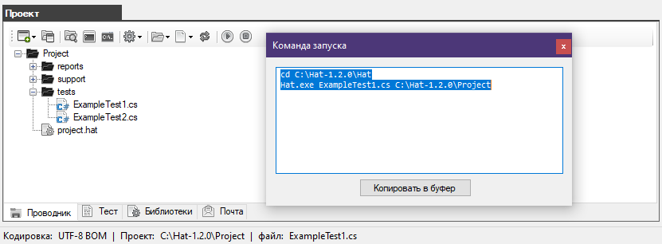
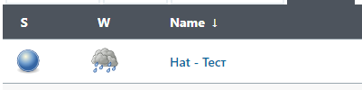
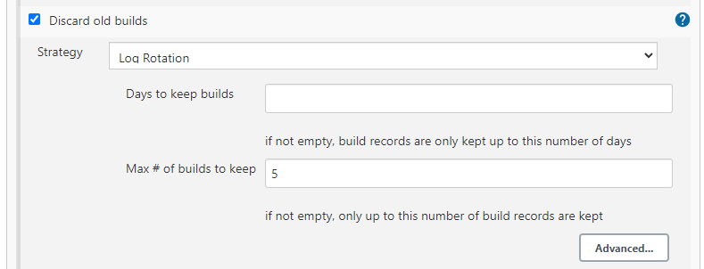
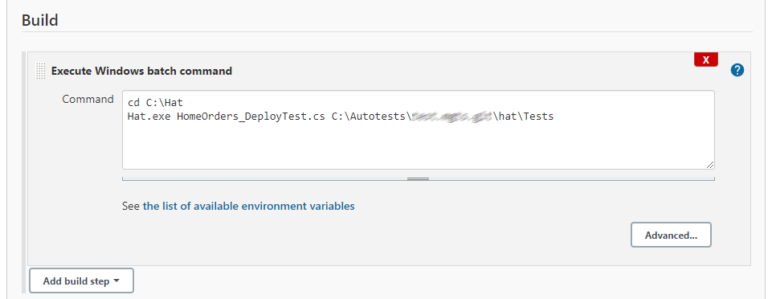
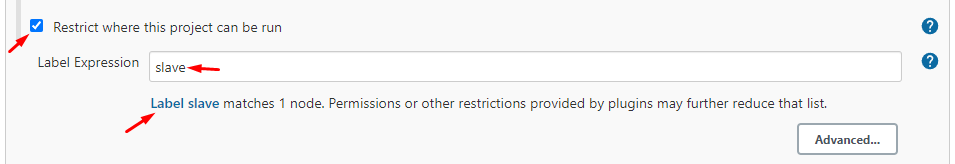
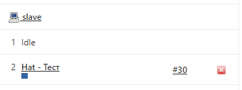

3. Подключение автотеста к ноде.
После того как вы получили команду запуска автотеста как это было рассказано в пункте "Запуск из командной строки"

Вам нужно в Jenkins создать задачу которая будет запускать автотест.

Включите флаг "Discard old builds" и выберите максимальное количество сборок для сохранения "Max # of builds to keep"

В разделе "Build" добавьте команду "Execute Windows batch command".
Затем в поле "Command" вставьте команду запуска автотеста полученную из браузера Hat.

В настройках задачи включите опцию "Restrict where this project can be run"
затем введите имя ноды slave (система обязательно должна её обнаружить)

Нажмите на кнопку Apply и Save

Запустите задачу с автотестом

В окне агентов в одном из потоков появится процесс

Если произошла ошибка при которой отказано в доступе
Браузер Hat версия 1.1.1 (19.07.2022) Запуск браузера... Проект открыт (версия проекта: 1.1.1)
- - - - - - - - - - - - - - - - - - - - - - - - - - - -
Произошла ошибка: System.UnauthorizedAccessException: Отказано в доступе по пути "C:\Autotests\#######\hat\Tests\reports\Report-HomeOrders_DeployTest.html". в System.IO.__Error.WinIOError(Int32 errorCode, String maybeFullPath) в System.IO.File.InternalDelete(String path, Boolean checkHost) в System.IO.File.Delete(String path) в Hat.Report.SaveReport(Boolean testSuccess) - - - - - - - - - - - - - - - - - - - - - - - - - - - -
Возможно что аген не был запущен от имени администратора (агент обязательно должен запускаться от имени администратора)
Возможно папка в которой находятся автотесты обладает блокирующими правами (перенесите автотесты в другое место на компьютере)
Created with the Personal Edition of HelpNDoc: Full-featured EBook editor